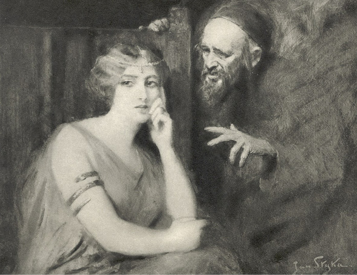

XXXIII
Vinitius odebral se přímo do domu, ve kterém bydlila Miriam. Před vchodem potkal Nazaria, který při pohledu na něho přišel do rozpaků, ale on jej přívětivě pozdravil a dal se zavésti do příbytku matčina.
V příbytku kromě Miriam zastal Petra, Glauka, Crispa a mimo to i Pavla z Tarsu, který se byl právě vrátil z Fregell1. Při pohledu na mladého tribuna zračilo se překvapení na všech tvářích, on pak řekl:
„Pozdravuji vás jménem Krista, jejž uctíváte!“
„Budiž jméno Jeho slaveno na věky!“
„Viděl jsem vaši šlechetnost a přesvědčil se o dobrotě, přicházím tedy jako přítel!“
„A my tě pozdravujeme jako přítele!“ odpověděl Petr. „Posaď se, pane, a rozděl se s námi o posilnění jako náš host!“
„Posadím se, rozdělím o posilnění, ale dříve mne vyslechněte, ty, Petře, i ty, Pavle z Tarsu, abyste poznali moji upřímnost! Vím, kde jest Lygie; vracím se od domu Linova, který stojí blízko tohoto příbytku. Mám na ni právo, dané mi Caesarem, mám ve městě, ve svých domech na pět set otroků; mohl bych obklíčiti její útočiště a zmocniti se jí, ale přece jsem tak neučinil a neučiním.“
„Požehnání Páně bude proto nad tebou a srdce tvé bude očištěno!“ řekl Petr.
„Děkuji ti, ale vyslechněte mne ještě! Neučinil jsem tak, ačkoli žiji v mukách a stesku. Dříve, nežli jsem se setkal s vámi, byl bych ji vzal k sobě najisto a zadržel násilím, ale vaše šlechetnost i vaše nauka, byť jí nevyznávám, změnila cosi v mé duši tak, že se již neodvažuji sáhnouti k násilí. Sám nevím, proč se tak stalo, ale je tomu tak! Přicházím tudíž k vám, protože vy jste Lygii otcem i matkou, i pravím vám: Dejte mi ji za choť a já vám odpřisáhnu, že nejen nebudu jí brániti, aby vyznávala Krista, nýbrž sám se začnu učiti Jeho nauce.“
Mluvil rozhodným hlasem, vztyčiv hlavu, ale byl přece jen rozčilen a nohy se mu třásly pod pruhovaným pláštěm, a když po jeho slovech nastalo mlčení, začal pokračovati, jako by chtěl předejíti nepříznivou odpověď:
„Vím, jaké jsou překážky, ale mám ji rád jako vlastní oči, a byť ještě nejsem křesťanem, nejsem nepřítelem ani vaším, ani Kristovým. Chci před vámi žíti v pravdě, abyste mi mohli důvěřovati. Jde v tomto okamžiku o můj život, a přece k vám mluvím pravdu! Jiný snad by vám řekl: Pokřtěte mne! – Já však pravím: Osvěťte mne! – Věřím, že Kristus vstal zmrtvých, jelikož to tvrdí lidé, žijící pravdou, kteří Jej viděli po smrti. Věřím, jelikož jsem sám viděl, že vaše nauka plodí ctnost, spravedlnost i milosrdenství, ne však zločiny, které se vám předhazují. Nepoznal jsem jí dosud mnoho, jen tolik, co vím od vás, z vašich skutků, jen tolik, co vím od Lygie, jen tolik, co vím z hovorů s vámi. A přece vám opakuji, že i ve mně se cosi změnilo jejím působením. Dříve jsem své služebníky držel železnou rukou, nyní – nemohu. Neznal jsem soucitu, nyní znám. Kochal jsem se v rozkoši, nyní prchám z rybníka Agrippova, neboť dech se mi zatajil ošklivostí. Dříve jsem věřil v nadvládu, dnes jsem se jí zřekl. Vězte, že sám sebe nepoznávám, ale zprotivily se mi hostiny, zošklivilo víno, zpěvy, kytary i věnce, zošklivil se mi dvůr Caesarův i nahá těla i všecky zločiny. A pomyslím-li si, že Lygie jest jako sníh na horách, mám ji rád tím více. A pomyslím-li si, že je taková vlivem vašeho učení, mám rád i ono učení a chci je! Ale poněvadž mu nerozumím, nevím, dovedu-li v něm žíti a snese-li je má povaha, žiji v nejistotě a mukách, jako bych žil ve tmavém žaláři.“
Tu se mu obočí na čele stáhlo v bolestný záhyb a na tváře mu vyrazil ruměnec, načež Vinitius mluvil stále rychleji a s rozechvěním stále větším:
„Hleďte, mučím se láskou i zatemnělostí! Tvrdilo se mi, že ve vaší nauce nemá ceny ani život, ani lidská radost, ani štěstí, ani právo, ani pořádek, ani vrchnost, ani římská vláda. Je tomu tak? Tvrdilo se mi, že jste ztřeštěnci. Rcete, co přinášíte! Jest hříchem milovati? Jest hříchem cítiti radost? Jest hříchem chtíti štěstí? Jste nepřáteli života? Je třeba, aby křesťan byl chuďasem? Já že bych se měl vzdáti Lygie? Jaká jest vaše pravda? Vaše skutky i vaše slova jsou jako průhledná voda, ale jaké je dno té vody? Vidíte, že jsem upřímný. Rozptylte tmu! Mně totiž řeklo se ještě toto: Řecko stvořilo moudrost a krásu, Řím pak moc, kdežto co přinášíte vy? Nuže, rcete, co přinášíte! Je-li za vašimi dveřmi jasné světlo, otevřte mi je!“
„Přinášíme lásku!“ řekl Petr.
A Pavel z Tarsu dodal:
„Kdybych mluvil jazyky lidskými i andělskými, lásky však bych neměl, byl bych jako měď zvučící…“
Leč srdce starého apoštola bylo dojato onou duší, svíjející se v mukách, která jako pták, zavřený do klece, toužila po vzduchu a slunci, a proto vztáhl k Vinitiovi ruce a pravil:
„Kdo klepá, bude mu otevřeno, a milost Páně je nad tebou; proto žehnám tobě, tvé duši i tvé lásce ve jménu Spasitele světa!“
Vinitius, jenž beztak mluvil u vytržení, uslyšev žehnání, přiskočil k Petrovi a tehdy stalo se cosi neobyčejného. Nuže, tento potomek Quiritů, který donedávna neuznával v cizinci člověka, chopil se rukou starého Galilejce a začal je z vděčnosti tisknout i ke rtům.
A Petr se zaradoval, neboť pochopil, že setba opět padla na jednu další úrodnou půdu a že jeho rybářská síť vylovila o jednu duši více.
Přítomní pak, neméně rozradostněni oním zjevným projevem úcty k božímu apoštolovi, zvolali jedním hlasem:
„Chvála na výsostech Pánu!“

Poppaea v rozhovoru s „rabbim“.
Vinitius povstal se zjasněnou tváří a začal mluviti:
„Vidím, že štěstí může mezi vámi býti domovem, neboť se cítím šťasten a domnívám se, že zrovna tak i v jiných věcech mne přesvědčíte. Ale tolik vám ještě povím, že se tak nestane v Římě. Caesar odjíždí do Antia, já pak musím s ním, poněvadž mám rozkaz. Víte, že neposlechnouti znamená smrt. Jestliže však jsem nalezl milost v očích vašich, jeďte se mnou, abyste mne učili své pravdě. Bude vám tam bezpečněji nežli mně samému, v tom velikém shonu lidí budete moci hlásati svoji pravdu u samého dvora Caesarova. Říká se, že Akté jest křesťankou; i mezi praetoriány jsou křesťané, neboť sám jsem viděl, jak vojáci klekali před tebou, Petře, u brány nomentské. V Antiu mám letohrádek, ve kterém se budeme scházeti, abychom po boku Neronově naslouchali vaší nauce. Říkal mi Glaukos, že jste hotovi pro jednu duši putovati až na konec světa; nuže, učiňte tak pro mne, co jste učinili pro ty, kvůli nimž jste přišli až z Judey, učiňte tak a neopouštějte duše mé!“
Oni uslyševše to, začali se raditi, s radostí uvažujíce o vítězství své nauky i o významu, jaký pro pohanský svět bude míti obrácení Augustiana a potomka jednoho z nejstarších rodů římských na pravou víru. Byli opravdu hotovi putovati na konec světa kvůli jedné duši lidské a od smrti Mistrovy ničeho jiného přece nedělali; proto jim odmítavá odpověď nepřišla ani na mysl. Ale Petr byl v té chvíli pastýřem celého stáda, a proto odjeti nemohl, kdežto Pavel z Tarsu, který byl nedávno v Aricii a ve Fregellách a chystal se opět na dlouhou cestu na východ, aby navštívil tamější osady křesťanské a oživil je novým duchem horlivosti, souhlasil, aby provázel mladého tribuna do Antia, neboť mu bylo snadno najíti tam koráb, jedoucí na řecká moře.
Vinitius, jakkoliv se zarmoutil, že Petr, jemuž byl tolik zavázán, nebude ho provázeti, poděkoval přece jen vděčně a pak se obrátil na starého apoštola s poslední žádostí.
„Znaje Lygiin příbytek,“ pravil, „mohl bych jíti k ní sám a zeptati se, jakož je slušno, chce-li mne za manžela, stane-li se má duše křesťanskou; ale raději chci požádati tebe, apoštole: Dovol, abych ji spatřil, nebo zaveď mne k ní sám! Nevím, jak dlouho budu nucen zdržeti se v Antiu. A mějte na paměti, že u Caesara nikdo není jist svým zítřkem. Řekl mi již i Petronius, že tam nebudu naprosto v bezpečí. Ať tedy ji spatřím předtím, ať nasytím jí své oči a ať se jí otáži, zapomene-li mi zlé a bude-li se mnou sdíleti dobré!“
A apoštol Petr se dobromyslně usmál a řekl:
„Kdož by ti tu oprávněnou radost měl odepříti, milý synu?“
Vinitius opět se schýlil k jeho rukám, neboť již nikterak nemohl opanovati překypující srdce, apoštol pak vložil ruce na jeho skráně a řekl:
„Ty však se Caesara neboj, neboť to ti prohlašuji, že ani vlas ti s hlavy nespadne!“
Potom poslal Miriam pro Lygyi, přikazuje, aby jí neříkala, koho mezi nimi najde, aby dívce tím větší způsobil radost.
Bylo to nedaleko, a tak po krátké době zahlédli ti, co byli shromážděni v jizbě, mezi myrtami v zahrádce Miriam, kterak vede Lygii za ruku.
Vinitius chtěl jí běžeti vstříc, ale při pohledu na tu milovanou postavu odňalo mu štěstí síly – i stál s tlukoucím srdcem, bez dechu, sotva na nohou moha se udržeti, stokrát více rozechvěn nežli tehdy, kdy po prvé v životě uslyšel šípy Parthů, svištící mu mimo hlavu.
Vběhla, netušíc ničeho, a při pohledu na něj stanula rovněž jako přikována. Její tvář se zarděla a hned nato zase velice zbledla a pak jala se Lygie rozhlížeti udivenýma a přitom i polekanýma očima po přítomných.
Kolem však viděla jasné, dobroty plné pohledy, apoštol Petr pak přistoupil k ní a pravil:
„Lygie, miluješ jej stále?“
Nastala chvíle mlčení.
Její ústa se začala třásti jako u dítěte, kterému je do pláče a jež, cítíc se vinno, přece jen vidí, že je nutno k vině se přiznati.
„Odpověz!“ řekl apoštol.
Tehdy s pokorou a úzkostí ve hlase zašeptala, klesajíc Petrovi ke kolenům:
„Tak jest…“
Vinitius však v jediném okamžiku přiklekl k ní, Petr pak vložil ruce na jejich hlavy a řekl:
„Milujte se v Pánu a ke slávě Jeho, neboť není hříchu v lásce vaší!“
Město ve střední Itálii. ↩︎